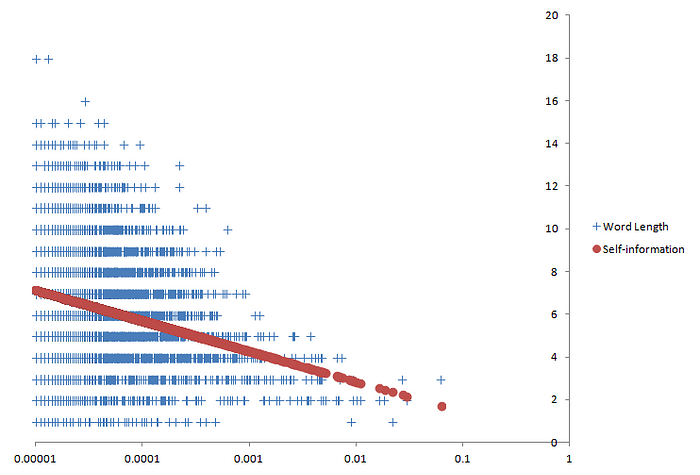
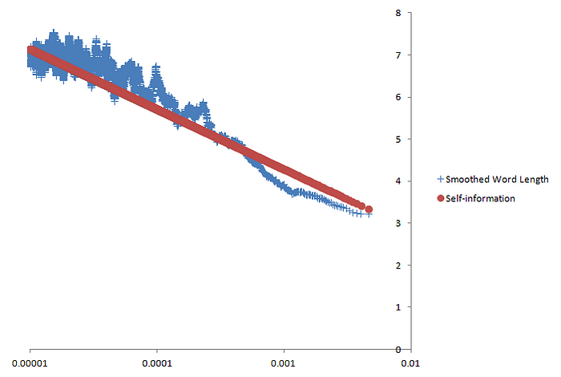
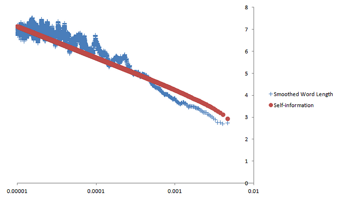

Ветhес Tჸæ Дбос$еЛи

Вспомните некоторые из наиболее распространенных слов в английском языке: a , an , the , of , one . Они имеют тенденцию быть довольно короткими. Между тем, менее распространенные слова ( карбюратор , парабола , круглые скобки ), как правило, длиннее. Для такого расположения есть веская причина: оно делает язык более компактным, поскольку длинные слова используются реже. Как будто носители английского языка прилагают коллективные усилия, чтобы язык был лаконичным. Но делают ли они это систематически? Как именно связаны друг с другом длины и частоты слов? Фактически, есть свидетельства того, что, чтобы сделать язык кратким, говорящие последовательно сопоставляют длину слов с их частотой математически оптимальным способом — варьируя длину слов в среднем пропорционально их самоинформации . Необходимость в эффективной схеме кодирования Самоинформация — понятие из области теории информации, возникшее в эпоху телеграфа. Информация по телеграфам передается в кодах. Например, в азбуке Морзе каждый символ кодируется кодовым словом, состоящим из последовательности длинных импульсов (или тире ) и коротких импульсов (или точек ). Например, символ n кодируется как тире, за которым следует точка (― •). Поскольку для кодирования, отправки и декодирования сообщений требуется время, важно, чтобы передача была максимально эффективной — краткой, но без потери какой-либо информации. Для этого более распространенным буквам присваиваются более короткие кодовые слова, а менее распространенным — более длинные. (Альфред Вейл, который разработал кодовые слова азбуки Морзе для букв, оценил частоту появления каждой буквы, зайдя в местную газету в Морристауне, штат Нью-Джерси, и подсчитав, сколько подвижных типов у них было для каждой буквы.) Итак, менее распространенный символ j кодируется четырьмя импульсами: точка, за которой следуют три тире (• ― ― ―), тогда как гораздо более распространенный символ e кодируется всего лишь одним импульсом, одной точкой (•). В наши дни мы редко отправляем телеграммы, однако теория информации по-прежнему очень актуальна. Это связано с тем, что компьютеры кодируют информацию практически таким же образом. Как и азбука Морзе, информация на компьютере также представляет собой двоичный код, в котором для кодирования всего используется всего два значения: 0 и 1. И, как и в случае с телеграммами, важно, чтобы закодированная информация на компьютерах была максимально эффективной как при хранении, так и при передаче. Что делает код эффективным? Мы примерно знаем, что можем повысить эффективность кода, назначая короткие кодовые слова обычным символам, а длинные кодовые слова — редким символам. Но для достижения максимальной эффективности какой именно длины должно быть каждое кодовое слово, учитывая частоту символа, который оно представляет? Чтобы узнать, как сделать код эффективным, мы должны сначала знать, что делает код эффективным. Эффективный код по определению содержит много информации в небольшом фрагменте кода. Поэтому оно должно сообщать нам то, чего мы не знаем, и упускать из виду то, что мы знаем. Другими словами, оно должно содержать как можно больше неопределенности или неожиданности. Предположим, мы записываем погоду в коде — 0 для солнечного дня и 1 для пасмурного дня. Эта последовательность кода не содержит большой неопределенности: 000000000000000000000000000001 Первый солнечный день может быть непредсказуемым, поскольку вначале у нас нет никаких оснований ожидать его, как и пасмурного дня. Но после этого солнечных дней становится так много, что вскоре они становятся вполне предсказуемыми. С другой стороны, следующая последовательность кода содержит гораздо больше неопределенности: 1001011101001011110001010010 Здесь солнечные и пасмурные дни кажутся случайными; каждый день кажется сюрпризом. Таким образом, эта последовательность имеет гораздо большую неопределенность и содержит больше информации, чем первая последовательность. Поскольку он упаковывает больше информации в код той же длины, он намного эффективнее первого. Из двух приведенных выше последовательностей мы видим, что погода наиболее непредсказуема, когда вероятность каждого типа погоды одинакова. В первой последовательности 27 солнечных дней и только один пасмурный, что дает вероятности 0,964 и 0,0357 соответственно. В более эффективной второй последовательности 14 солнечных и 14 пасмурных дней, что дает вероятность каждого из них 0,5. Помимо того, что каждая случайная переменная (переменная, представляющая случайные результаты) равновероятна, она также должна быть статистически независимой ; другими словами, на вероятность каждого результата не должен влиять какой-либо другой результат. Если бы 14 солнечных дней во второй последовательности вместо этого произошли все подряд, а затем последовали бы 14 пасмурных дней, результаты не были бы независимыми: 0000000000000011111111111111 Несмотря на то, что она содержит такое же количество солнечных и пасмурных дней, как и предыдущая последовательность, эта последовательность гораздо более предсказуема, поскольку все солнечные дни предшествуют пасмурным дням. Погода в конкретный день зависит от погоды в другие дни: например, после первого пасмурного дня последующие дни должны быть пасмурными. (В реальном мире погода в любой день частично зависит от погоды в предыдущие дни, но для наших целей мы будем притворяться, что она независима). Короче говоря, непредсказуемость наибольшая, когда все возможные результаты равновероятны и когда каждый результат генерируется независимо. Отличным примером максимальной непредсказуемости является классический подбрасывание монеты. Каждый бросок монеты независим, не зависит от других бросков монеты, и каждый бросок имеет два равновероятных исхода: орел и решка. Как мы увидим, подбрасывание монеты может помочь нам получить оптимально эффективные коды, даже если результаты не имеют одинаковой вероятности. Разработка эффективных кодов До сих пор мы могли создавать эффективные коды только в том случае, если они представляли события, которые оказались равновероятными. Но, конечно, это не всегда происходит. Предположим, мы по-прежнему записываем погоду с помощью двоичного кода, но теперь различаем три типа погоды — солнечную, облачную (но без дождя) и дождливую. Солнечные дни выпадают в половине случаев, а пасмурные и дождливые дни — в четверти. Опять же, предположим, что погода в данный день — самостоятельное событие. Какой длины должно быть каждое кодовое слово для каждого типа погоды, чтобы обеспечить максимальную эффективность кода? Здесь могут помочь подбрасывания монет. Любое событие само по себе может быть кодом, если оно имеет ту же вероятность, что и событие, которое оно представляет. Мы знаем, что броски монеты уже обладают свойствами оптимально эффективного двоичного кода, и мы знаем вероятности исходов бросков монеты (0,5 для орла, 0,5 для решки). Таким образом, мы можем использовать подбрасывание монеты как оптимально эффективный код для представления событий различной вероятности — код подбрасывания монеты. Процесс кодирования событий в коде подбрасывания монеты основан на двух принципах. Во-первых, результат подбрасывания монеты (орёл или решка) с вероятностью 0,5 эквивалентен любому статистически независимому событию с вероятностью 0,5. Если вероятность солнечного дня равна 0,5, это эквивалентно броску монеты, когда выпадает решка. Тогда солнечный день можно закодировать как головы или сокращенно H. Второй вывод заключается в том, что отдельное событие также может быть эквивалентно серии бросков монеты, если вероятность этого события равна общей вероятности бросков монеты. Предположим, вероятность пасмурного дня равна 0,25. Совместная вероятность любого результата двух последовательных бросков монеты также равна 0,25: P(TH) = P(T) × P(H) = 0,5 × 0,5 = 0,25 Таким образом, пасмурный день можно закодировать как любой результат двух подбрасываний монеты. То же самое касается дождливых дней, вероятность которых такая же, как и пасмурных дней. Теперь, выбирая коды для пасмурных и дождливых дней, мы должны следить за тем, чтобы не возникало двусмысленности при расположении кодовых слов друг за другом. Поскольку солнечные дни обозначаются H, было бы двусмысленно, если бы пасмурные дни были, скажем, HH; не было бы возможности узнать, представляет ли HH пасмурный день или два солнечных дня. Одним из типов кода, который гарантированно является однозначным, является префиксный код , код, в котором ни одно кодовое слово не совпадает с началом другого кодового слова. Чтобы создать префиксный код, нам нужно, чтобы пасмурные и дождливые дни начинались с буквы T. Итак, давайте сделаем пасмурные дни TH, а дождливые дни TT. Теперь мы можем легко превратить код подбрасывания монеты в числовой двоичный код (поскольку именно с ним работают компьютеры). Давайте сделаем орла 0, а решку 1. Тогда кодовое слово для солнечного дня, которое в коде подбрасывания монеты было H, будет 0. Код подбрасывания монеты для пасмурного дня был TH, поэтому теперь оно будет 10. Аналогично, в дождливый день было бы 11. Теперь мы разработали двоичные коды для трех исходов с разными вероятностями наиболее эффективным способом. В процессе мы также проиллюстрировали самоинформацию о событии: это количество подбрасываний монеты, необходимое для того, чтобы уравнять вероятность события. Другими словами, это наиболее эффективная длина двоичного кода события. Таким образом, в двоичном формате самоинформация о солнечных днях, как и о любом событии с вероятностью 0,5, равна 1 броску монеты или, в более общем смысле, 1 биту (двоичная цифра ), тогда как самоинформация пасмурных и дождливых дней , как и любое событие с вероятностью 0,25, имеет размерность по 2 бита. Мы можем убедиться в том, что наша схема кодирования погоды оптимально эффективна, заметив, что в нашей схеме вероятность того, что любой бит будет равен 0, такая же, как и вероятность того, что он будет равен 1. Учитывая, что наши кодовые слова равны 0, 10 и 11, бит может находиться в одном из четырех возможных состояний: 0 в коде для солнечного дня, первая 1 в коде для несолнечного дня, 0 в коде для пасмурного дня или вторая 1 в коде на черный день. Это можно описать следующей диаграммой состояний:

Каждый кружок представляет состояние и содержит считываемый бит, а также погоду, которую представляет кодовое слово, если состояние находится в последнем бите кодового слова. Стрелками отмечены возможные переходы между состояниями, а цифры на стрелках указывают вероятности переходов. Важным наблюдением является то, что каждое состояние имеет два возможных перехода, ведущих из него, и вероятности этих переходов всегда одинаковы (0,5). Это означает, что все переходы между битами настолько неопределенны, насколько это возможно, а значит, данная схема кодирования является наиболее эффективной из возможных. Теперь мы можем вывести общую формулу расчета самоинформации. Как мы видели, в двоичном формате самоинформация о событии эквивалентна количеству подбрасываний монеты, которое необходимо, чтобы уравнять вероятность события. Поскольку каждый результат подбрасывания монеты имеет вероятность ( p ) 0,5, собственная информация равна количеству раз ( n ) 0,5, которое необходимо умножить само на себя, чтобы сравнять вероятность события. Математически это можно выразить так: p = (0,5) ⁿ = (2⁻¹) ⁿ = 2⁻ ⁿ , поэтому –n = log₂ p и n = –log₂ p Поскольку количество бросков монеты эквивалентно самоинформации, мы можем заменить n на I , общепринятый символ самоинформации: Я = –log₂ п если p = 0,5, то I = –log₂ 0,5= – ( – 1) = 1 бит , если p = 0,25, то I = –log₂ 0,25 = – ( – 2) = 2 бита В этой формуле следует отметить три вещи. Во-первых, здесь используется логарифм с основанием два, поскольку мы рассматривали двоичные коды. Но коды могут использовать в качестве основы другие целые числа. Если в коде используются десять значений, как в нашей десятичной системе счисления, это будет код с десятичной системой счисления, а в формуле будет использоваться десятичный логарифм. К счастью, самоинформацию можно преобразовать из одной системы счисления в другую, просто умножив константу, аналогично преобразованию метров в сантиметры. Например, это преобразование из двойки в десятку: I = –log₁₀ p = ( log₁₀ 2)( –log₂ p ) ≈ – 0,301 log₂ p Из-за этого базу обычно не считают очень важной. Поскольку компьютеры хранят информацию в двоичном формате, самоинформация чаще всего измеряется в битах. Но иногда его измеряют в тритах (основание 3), дитах или хартли (основание 10) и даже в нацах (основание е , или примерно 2,718). Хотя цифровой код не может быть построен в базе e , иногда используются nats, поскольку в математике обычно используются натуральные логарифмы (так называются логарифмы в базе e ). Во-вторых, концепция самоинформации предполагает, что случайные величины статистически независимы. Давайте вернемся к нашей последовательности солнечных дней (0) и пасмурных дней (1), каждый из которых имеет одинаковую вероятность: 1001011101001011110001010010 Чтобы вычислить самоинформацию всей последовательности, мы добавляем самоинформацию каждого результата. Поскольку вероятность каждого исхода равна 0,5, его собственная информация равна 1 биту. Собственная информация всей последовательности тогда составляет 28 бит. Однако, если бы мы таким же образом рассчитали самоинформацию следующей последовательности, мы бы ее переоценили: 0000000000000011111111111111 Поскольку результаты этой второй последовательности не генерируются независимо, они нарушают предположение о независимости самоинформации. Это снова возникнет, когда мы применим концепцию самоинформации к английскому языку. Третье и последнее наблюдение относительно самоинформации заключается в том, что, хотя она предположительно представляет собой длину кода, самоинформация не обязательно должна быть целым числом. Например, в двоичном формате событие с вероятностью 0,2 будет содержать –log₂ 0,2 ≈ 2,32 бита собственной информации. Это означает, что, в отличие от нашего простого примера с погодой, зачастую невозможно разработать оптимально эффективную схему кодирования, просто присваивая кодовое слово каждому событию. Чтобы сделать коды оптимально эффективными, часто необходимо применять алгоритмы сжатия, подобные тем, которые мы используем на наших компьютерах. Когда это происходит, события обычно имеют среднюю длину кода, не являющуюся целым числом. Чтобы дать представление о том, как работает сжатие, мы вернемся к более раннему примеру неэффективного кодирования, где 0 представляло солнечные дни, а 1 — пасмурные дни: 000000000000000000000000000001 Мы можем сжать это в более короткий код, воспользовавшись его предсказуемостью. Например, мы можем обозначать пасмурные дни пятью нулями (00000), а солнечные дни — пятизначным двоичным числом, указывающим количество последовательных солнечных дней. Поскольку имеется 27 солнечных дней подряд (11011 в двоичном формате), последовательность становится 1101100000. Это десять бит в длину, что значительно короче, чем 28 бит в оригинале. Вместо одного целого бита каждое событие теперь занимает 10/28 ≈ 0,357 бита на событие. В частности, каждый солнечный день теперь занимает 5/27 ≈ 0,185 бит. Десять битов — лучшее, что мы можем сделать? Какова наименьшая длина, до которой мы можем сжать последовательность? Должен быть предел эффективности кодов, поскольку коды потеряют информацию, если их сократить до определенной точки. Как только мы узнаем этот предел, мы поймем, к какой степени эффективности следует стремиться и когда следует прекратить попытки. Мы уже знаем, что самоинформация — это оптимальная длина кода для каждого события. Средняя — или, точнее, ожидаемая — собственная информация тогда даст ожидаемую оптимальную длину кода для каждого события. Мы можем вычислить ожидаемую самоинформацию, умножив самоинформацию каждого события на его вероятность, а затем суммируя результаты. В нашем примере информационная энтропия равна P( солнечно ) * –log₂ P( солнечно ) + P( облачно ) * –log₂ P( облачно ) =27/28 * –log₂ 27/28 + 1/27 * –log₂ 1/27 ≈ 0,222 бит/событие Если мы умножим ожидаемую собственную информацию для каждого события на количество событий в последовательности, мы получим оптимальную длину кода для последовательности. При 28 событиях в последовательности минимально возможная длина составляет 28 * 0,222 бита на событие или около 6,22 бита. Клод Шеннон , математик и инженер, заложивший большую часть основы теории информации, доказал , что ожидаемая самоинформация, также известная как информационная энтропия , — это наименьшая ожидаемая длина кода, в которую можно сжать код. Это означает, что наименьшая длина, в которую можно сжать последовательность, составляет 6,22 бита. Как оказалось, десять битов — это не лучшее, что мы могли сделать. Общая формула информационной энтропии ( условно записываемая как H ) выглядит следующим образом: H(x) = ∑ –p ( x ) logₐ p ( x ), где p(x) — вероятность события x , a — логарифмическая основа, а ∑ — сумма по всем возможным результатам x . Английский как код Прежде чем приступить к изучению самоинформации, у нас возник вопрос: связана ли длина английских слов с их частотностью таким образом, чтобы сделать их максимально краткими? Другими словами, является ли английский язык оптимально эффективным кодом? В некотором смысле английский подобен любому искусственному коду. Однако вместо использования тире и точек или 1 и 0 в качестве значений в английском языке используются десятки символов, не все из которых являются буквами — 26 строчных букв алфавита, а также прописные буквы, цифры и знаки препинания, такие как апострофы ( не t ), запятые ( 1000 ) и точки ( США ). Оценив вероятность каждого слова, подсчитав его частоту в большом текстовом образце (известном как корпус ) , мы можем вычислить самоинформацию каждого слова и информационную энтропию корпуса. Однако английский язык также имеет несколько уникальных свойств. Самым важным из этих свойств для наших целей является отсутствие статистической независимости. Во-первых, английские слова не встречаются статистически независимо. Последовательность слов в английском языке должна соответствовать ограничениям грамматики. Многие последовательности слов не являются грамматическими в английском языке, например, hot the in или no will . Это делает информационную энтропию английского языка ниже, чем если бы английские слова действительно встречались статистически независимо. Поскольку самоинформация предполагает, что случайные величины независимы, наш расчет информационной энтропии как ожидаемой самоинформации будет переоценивать ее истинное значение. Но поскольку нас интересует только влияние длины слова на эффективность, это не проблема. Длина английских слов по-прежнему может влиять на эффективность английского языка, даже если сами слова не встречаются независимо. Другими словами, влияние грамматических ограничений на эффективность не зависит от влияния длины слов. Таким образом, ожидаемая собственная информация не будет представлять собой истинный предел сжатия, но все равно будет наименьшей ожидаемой длиной слова с учетом этих ограничений. Второе отличие английского языка от искусственных кодов заключается в том, что символы в словах также не могут встречаться в любом порядке. Как мы видели ранее, оптимально эффективный код должен состоять из равновероятных и статистически независимых значений. Если бы английский был таким, каждый символ встречался бы с равной вероятностью в каждой позиции символа, независимо от того, какие другие символы встречаются до или после него — точно так же, как биты в примере с погодой, который иллюстрируется диаграммой состояний. К сожалению, английские символы не являются ни равновероятными, ни статистически независимыми. Символы в английском языке имеют очень разную частоту; например, e встречается гораздо чаще, чем q . А вероятности появления английских символов сильно различаются в зависимости от окружающих их персонажей. Если первая буква слова — b , вторая буква может быть a (как в bad ), но не, скажем, k . Это результат того, что в английском языке действуют ограничения на сочетания звуков (известные как фонотаксические ограничения ), которые не позволяют таким последовательностям, как bknvt , стать английскими словами. Но хотя фонотаксические ограничения не позволяют английскому языку быть оптимально эффективным кодом, длина слов все же может сделать английский язык наиболее эффективным, если учесть эти ограничения. Длина слова будет больше, чем его собственная информация в его собственной базе (база равна размеру набора символов английского языка), но они все равно могут быть равны собственной информации в какой-либо другой базе. Эта другая база должна быть меньше размера английского набора символов, поскольку самоинформация в более низких базах больше (в постоянном коэффициенте, как мы видели ранее). Чтобы найти эту нижнюю базу (назовем ее b ), мы можем использовать эквивалентность между ожидаемой длиной слова ( L ) и энтропией ( H ) . Точнее, мы можем приравнять общее количество возможных слов длины L в базе b к общему количеству возможных слов длины H в некоторой другой базе a : аᴴ = бо Поскольку мы хотим найти значение b , мы должны знать значения L , H и a . Мы можем найти L , поэтому нам просто нужно выбрать значение для a , которое затем можно использовать для вычисления H на основе частот слов. Если мы выберем a равным 2, то 2 ᴴ = bᴸ H = log₂ bᴸ H = L log₂ b log₂ b = H/L b = 2 ᴴ ⸍ ᴸ Теперь, когда мы знаем, как найти b , мы можем вычислить внутреннюю информацию английских слов в базе b , а затем сравнить ее с фактической длиной английских слов. Будут ли они одинаковыми? Или хотя бы похож? Давайте посмотрим на некоторые данные. Глядя на данные За данными мы обратимся к списку частотности слов из Британского национального корпуса (BNC), корпуса разговорного и письменного британского английского языка конца 20-го века, состоящего из 100 миллионов слов. В этом словарном списке указаны частоты всех 7625 слов, которые встречаются в корпусе более 10 раз на миллион слов (или вероятность не менее 0,000001). Затем мы строим график каждого слова по его длине (количеству символов в слове) и частоте корпуса. Зная частоту слов, мы также можем вычислить собственную информацию. Для этого нам понадобится логарифмическое основание. В словах BNC используется в общей сложности 72 различных символа. Но, как обсуждалось ранее, мы хотим найти основу, при которой ожидаемая длина слова равна ожидаемой самоинформации или информационной энтропии. Для слов в данных BNC это основание составляет около 5,012. Несколько примечаний: аннотации, добавленные к концам слов (например, звездочка в has* ), не включаются в длину слова. Кроме того, были исключены несколько записей, которые представляли собой комбинации более чем одной словоформы (например, данные/данные ). Наконец, в списке нет пробелов, но, поскольку их можно рассматривать как просто еще одно слово, они не окажут существенного влияния на наши результаты. И так, мы получаем вот такой сюжет:

Длина слова и собственная информация ( b ≈ 5,012) в зависимости от логарифмической частоты слов Длины слов в корпусе обозначены синими крестиками, а самоинформация представлена красными точками. Чтобы самоинформация отображалась в виде прямой линии, частота слов на горизонтальной оси отображается в логарифмическом масштабе. На графике длины слов действительно группируются вокруг собственной информации, которая, как и ожидалось, увеличивается линейно по мере логарифмического уменьшения частоты. Однако для данной частоты длина слов сильно различается, особенно среди слов с меньшей частотой. Корреляция между длиной слова и самоинформацией составляет 0,246 (0 — отсутствие корреляции, а 1 — полная положительная корреляция), что не очень высоко . Но, возможно, за изменением длины слов скрывается средняя тенденция, близкая к самоинформации. Ранее мы определили самоинформацию как наиболее эффективную длину слова для случайного события. Но чтобы длины слов были оптимально эффективными, они не обязательно должны быть равны внутренней информации для каждого слова; равными должны быть только ожидаемая длина слова и ожидаемая самоинформация. Некоторые слова могут быть длиннее, чем сама информация; до тех пор, пока другие слова с аналогичной частотой компенсируют это тем, что они короче их самоинформации, ожидаемая длина слова все равно может равняться ожидаемой самоинформации. Один из способов выявить эту среднюю тенденцию — сгладить колебания с помощью простой скользящей средней . Мы создаем окно, которое всегда содержит одинаковое количество точек данных — скажем, 100. Мы начинаем с размещения этого окна вверху отсортированного списка частот и вычисляем среднюю длину слова и среднюю частоту всех слов в окне. Затем мы сдвигаем окно вниз по списку частот, заменяя наиболее часто встречающееся слово в окне словом, находящимся непосредственно под окном. Средняя длина и частота слов внутри окна вычисляются снова, затем окно перемещает еще одно слово вниз по списку. Этот процесс повторяется до тех пор, пока окно не достигнет нижней части списка частот. Самоинформация в каждом окне рассчитывается на основе среднего значения частоты окна. Результат показан ниже:

Сглаженная длина слова (простое скользящее среднее, размер окна = 100 точек данных) и собственная информация (b ≈ 5,012) в зависимости от частоты логарифмических слов. Сглаженная длина слов теперь намного ближе к самоинформации. Их корреляция с самоинформацией достаточно высока — около 0,898. Существуют разные способы сглаживания данных; Другой способ — использовать своего рода взвешенное скользящее среднее , где вместо простого среднего мы вычисляем ожидаемую длину слова для слов в каждом окне. Как обычно, мы умножаем длину каждого слова на его частоту, затем суммируем результаты. Затем, поскольку сумма частот не равна 1, мы нормализуем эту сумму, умножив ее на обратную величину суммы частот слова, или 1/∑ p ( w ) ( где p ( w ) — частота слова w , а ∑ — суммирование по всем w ) . Результат практически идентичен:

Сглаженная длина слова (простое скользящее среднее, размер окна = 100 точек данных) и собственная информация (b ≈ 5,012) в зависимости от частоты логарифмических слов. На этот раз корреляция между сглаженной длиной слова и самоинформацией составляет 0,899, что немного выше, чем даже корреляция простого скользящего среднего. С такими высокими коэффициентами корреляции, полученными с использованием данных из большого корпуса и применением двух разных методов сглаживания, мы можем быть вполне уверены, что это сходство между длиной сглаженных слов и самоинформацией является существенной закономерностью. Это означает, что длины английских слов и их самоинформация в среднем равны. Таким образом, может показаться, что, хотя английский язык не может быть оптимально эффективным из-за фонотаксических ограничений, он по-прежнему настолько эффективен, насколько это возможно в данных обстоятельствах. Коллективные усилия, чтобы язык был кратким Последствия весьма примечательны: носители английского языка, действуя коллективно, варьируют длину и частоту слов, чтобы язык оставался почти оптимально кратким. Подобно муравьям, управляющим колонией, мы делаем все это неосознанно, не осознавая не только необходимости быть краткими, но даже того, как можно достичь этой цели. И все же каким-то образом вместе мы поддерживаем этот прекрасный баланс. Также интересно, что письменный английский демонстрирует такую сильную закономерность. Английское правописание, хотя оно по-прежнему в основном фонетическое, печально известно тем, что неточно отражает современное произношение. Такие слова, как «through » и «night» , современное произношение которых утратило существовавшие исторически звуки, могли увеличиться в частоте из-за их более короткой современной фонетической длины, которая не отражена в их написании. Это вполне могло нарушить шаблон. Но, несмотря на это, средняя длина слов и самоинформация по-прежнему сильно коррелируют. Также нет оснований полагать, что только английский язык следует этой схеме, и было бы интересно узнать, можно ли найти тот же результат в других языках. Для простоты сравнения для всех языков следует использовать фонетические транскрипции в Международном фонетическом алфавите (IPA) , а не их собственные орфографии. Это устранило бы нарушения, распространенные в стандартной орфографии, а также определило бы, насколько английская орфография повлияла на корреляцию, которую мы здесь обнаружили. Наконец, в нашем текущем эксперименте мы использовали измерение, которое мы можем условно назвать эквивалентной базой , логарифмической базой, при которой информационная энтропия равна ожидаемой длине слова. Было бы интересно посчитать эквивалентные основы для других языков, а затем сравнить разницу между эквивалентной базой и реальным количеством звуков в каждом языке. Большая разница между эквивалентной базой и размером звукового запаса будет означать, что язык имеет более строгие фонотаксические ограничения. Этот небольшой эксперимент является примером того, как теория информации, область математики, изначально разработанная для искусственных кодов, тем не менее, может дать убедительные идеи применительно к человеческому языку. Интересно, когда человеческие языки ведут себя как искусственные коды, и еще интереснее, когда это не так. Что еще более важно, теория информации дает нам возможность измерить свойства человеческого языка, позволяя нам задавать о нем вопросы, которые в противном случае мы бы никогда не подумали задать. Графика вверху статьи взята отсюда .
Мораль Истерии Любви: Любовь нежна, это трудно понять. Истинная любовь есть нечто отдельное от любофф, и не уподобляемая ей, это одно: похоть! в Э€ то совсем другое дело, и между их лежит широкая граница '45'; ни в коем случае они не смешиваются услышать мое слово и лишь придя ко мне и за патентом в ДBАРген! bARionleg МЕЛОДИЯ Aibolem ibANKn8₽rÅd'ß.